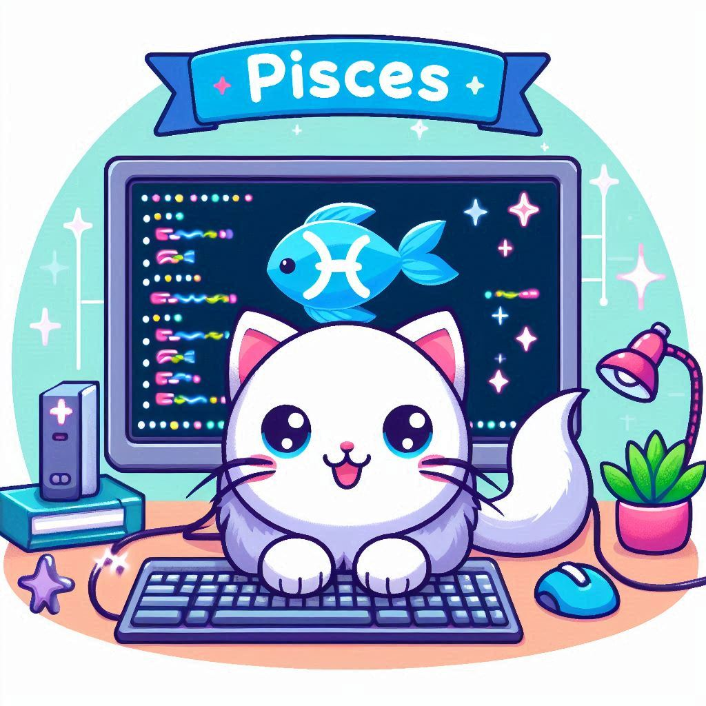

This month, your imagination and empathy will be your greatest assets in your coding endeavors. As a
Pisces, your intuitive nature and creative mind make you a unique and valuable contributor in the
world of programming.
Your coding projects may require you to draw on your deep sense of empathy and innovative thinking.
Trust in your ability to navigate even the most complex challenges with your natural intuition and
insight. Approach debugging and testing with a patient and open-minded attitude, and you'll discover
creative solutions.
Learning and Development
This month is ideal for exploring new programming languages or technologies. Take advantage of online
courses and tutorials to expand your skill set. Your intuitive grasp of new concepts and your creative
approach to problem-solving will help you quickly apply what you learn.
Personal Growth
Your compassion and determination will be your greatest strengths in your coding projects this month. As
a Pisces, you are known for your dedication and ability to persevere through challenges. Stay focused
and trust in your ability to find effective solutions to any obstacles you encounter.
Collaboration will be particularly beneficial this month. Working with others can lead to innovative
ideas and solutions. Don’t hesitate to share your insights and seek feedback from your peers.
While you immerse yourself in coding, remember to take breaks and prioritize self-care. Balancing work
with relaxation will help you maintain your productivity and creativity. Incorporate mindfulness
practices or short walks into your daily routine to stay refreshed.
Career
In your career, your empathetic nature and strong intuition will be your greatest assets. This month, you
may find yourself in roles that require problem-solving and innovative thinking. Your ability to
understand and anticipate the needs of your team will be highly valued. Don’t hesitate to share your
ideas and take the lead on projects that resonate with you. Your efforts will not go unnoticed and can
open doors to new opportunities.
Lucky days for coding: 2nd, 14th, 25th
Power color: Green
Embrace the challenges and opportunities that come your way this month, and let your coding skills shine
bright!